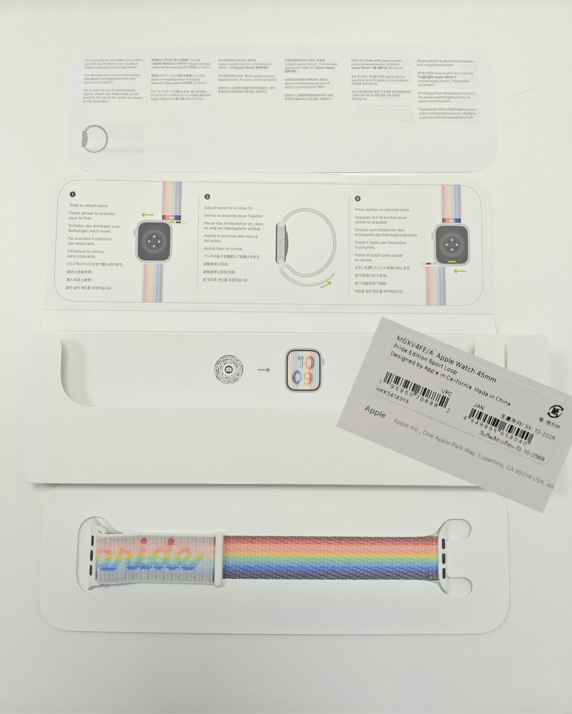

RedFox（2代目）🇲🇴🇭🇰
@FoxRed695449
10月產的新鮮的😋
Apple很榮幸能為一眾LGBTQ+倡導團體提供財政支援,協助他們帶來正面的改變
Pride Edition 運動手環靈感源自LGBTQ+社群的力量和共融,以彩虹旗的驕傲和五種新穎顏色為核心,交織出鮮明跳脫的漸變色彩.黑色和棕色象徵被邊緣化的LGBTQ+有色人種社群,亦代表已經感染HIV病毒/愛滋病,以及因而逝世的人；淺藍色、粉紅色和白色則向跨性別及非常規性別人士致敬
